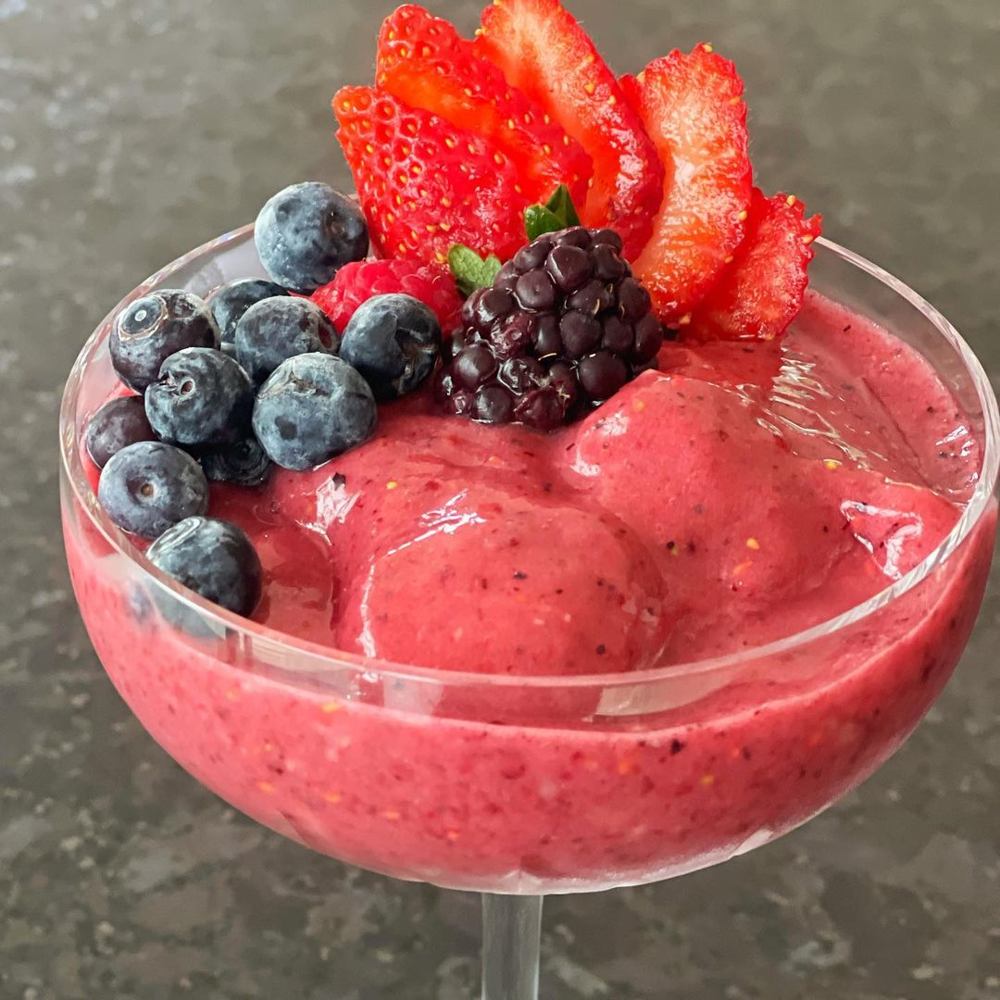

Sem Lactose
Bolinho
4 ovos
1/2 xícara de chá de leite de coco diluído em 1 xícara de chá de água
4 colheres de sopa de azeite de oliva
1 e 1/2 xícara de chá de farinha de arroz
1/2 xícara de chá de polvilho doce
1/2 xícara de chá de fubá
1 colher de sopa de açúcar demerara
1 colher de chá de sal marinho, ou mais, se preferir
1 colher de sopa de fermento biológico seco
10 min fácil
Smoothie de Banana e Frutas Vermelhas
2 bananas bem maduras (prata, nanica ou banana maçã)
4 morangos
4 framboesas
20 mirtilos
4 amoras grandes
100ml de água
Mel a gosto (opcional)
15 min Fácil